After hitting Save and continue on the Define Epi page, you will automatically be brought to the Define Pops page, where you distribute your national population among the different sub-populations you have defined and you also set up turnover if you have a concentrated epidemic. This page takes 3 different forms with different data requirements depending on how your epidemic was set up on the Define Epi page.
The case with the simplest data requirements is the generalized urban/rural epidemic created with the Urban Rural (G) template. In this case, EPP uses the populations provided by Spectrum and applies the UN Population Division urban proportions to estimate the size of the urban and rural populations. These populations will change in size over time in accordance with the shifting proportion of urban population.
With this type of epidemic, the Define Pops page will appear as below. It will have a single line, the line colored light blue in the red box in the figure below, for you to change the percentages of urban population. By default, this line will be populated with the urban percentages from the UN population projections. To change these values, just type over the existing ones. If you make changes and later decide you wish to return to the UN values, click on the button labeled “Adjust to UN values” at the bottom left side of the page and the UN values will be restored.
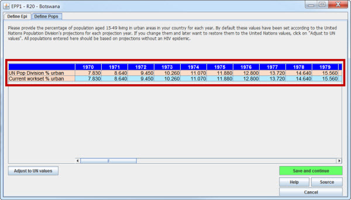
Unless you wish to change these numbers, just click on Save and continue and EPP1 will exit, returning you to Spectrum. Once back in Spectrum, select the item Surveillance data (EPP) under the Incidence menu and you will be taken to EPP2 on the HIV Data page. Here you will begin to enter your surveillance data, the next step in the fitting process.
If you have defined a generalized epidemic with regional sub-populations, you will see the table outlined in red below. In this table, the first column gives the region name and the remainder of the columns are the size of the population in that region for every year from the first year to the last year of the projection. By default this will be from 1970 to 2015. In the blue box in the lower left of the page, you can switch the table from displaying population numbers to displaying population percentages in each region. Sometimes the percentages are easier to work with, as we will discuss shortly.
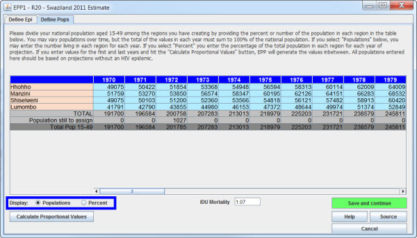
Your first option with this type of regional epidemic is to fill in the population numbers for each region year by year. This will clearly be a lot of work and might be quite error-prone. So EPP has several validation lines shown in gray at the bottom of the table.
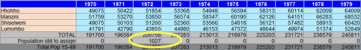
The first gray row labeled “TOTAL” is the sum of the populations that you have entered for this year. The second row labeled “Population still to assign” is the total population for that year not yet assigned in this projection. In the figure you can see that this number is 1027 for the year 1972, the number circled in yellow. The final row labeled “Total Pop 15-49” is the population size received from Spectrum. When you have completely filled in the table and reduced the population still to assign to zero for each year, then the “TOTAL” and the “Total Pop 15-49” lines should agree with each other.
At this point, with the 1972 population out of balance, if you seek to exit this page by clicking Save and continue, you will see the following error message:
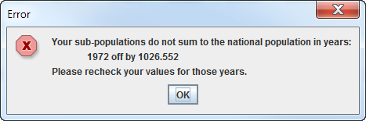
EPP is telling you that your populations in the year 1972 do not total to the correct 15 to 49 population. If you go back and correct this, then EPP will save the values and exit when you click Save and continue.
There are two difficulties with option 1. First, it is sometimes difficult to find a full set of year by year population projections for each region or province in your country. Second, it is challenging to type in all of these numbers for 46 years. EPP can offer you a simpler alternative. If you know the populations in each region in the first year of the projection, 1970, and in the last year of the projection, you can enter these in the table, as shown:
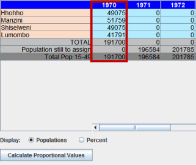 |
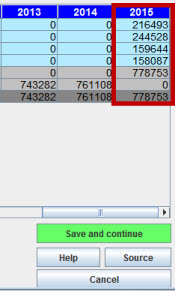 |
Make sure that the populations in both 1970 and 2015 sum up to the total national population, i.e., make sure that the population still to assign is zero in 1970 and 2015. Now click on the button labeled “Calculate Proportional Values" in the lower left-hand corner. You will see the following prompt:
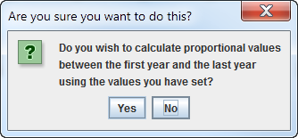
Click on yes and the rest of the table will be filled in with values that sum up to the annual population for each year of your projection. Your table will now look like this:
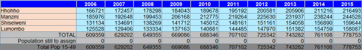
All the intervening years have been filled in. EPP does this through the following procedure:
If one clicks on the Percent radio button next to the word “Display:” you can see how these percentages are changing over time. Each percentage increases or decreases by a fixed amount each year.
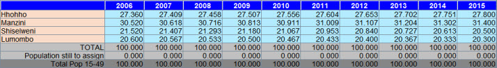
When satisfied with your annual regional populations, click on Save and continue and EPP1 will exit, returning you to Spectrum. Once back in Spectrum, select the item Surveillance data (EPP) under the Incidence menu and you will be taken to EPP2 on the HIV Data page. Here you will begin to enter your surveillance data, the next step in the fitting process.
The final and most complicated case is for concentrated epidemics. In these epidemics, risk is normally concentrated in a number of smaller sub-populations, e.g., people who inject drugs, MSM, and sex workers and clients. In addition, these are often not closed populations, so we must consider the impact of turnover.
As with the preceding two cases, the first step is to fill in the populations. This is often more challenging in concentrated epidemics because population size estimates for key sub-populations with higher risk are more uncertain and require more effort to collect. However, once this information is gathered and synthesized, it is entered in exactly the same way as in Case 2 for regional generalized epidemics.
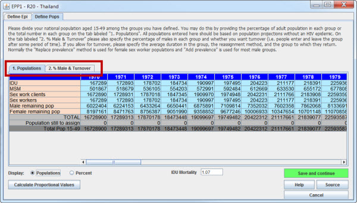
However, when you open the Define Pops page in a concentrated epidemic situation, you see one other difference. Where there was one table in the generalized situation cases, there are now two tables:
These two tables appear on separate tabs, highlighted in the red box above. To view the table for % Male & Turnover, click on the rightmost tab. This will display the table shown below.
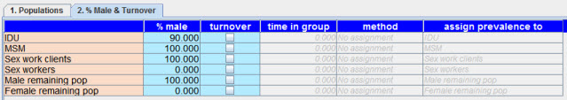
This table stores the following data in its columns:
One of the drawbacks to very early versions of EPP was that the original Reference Group Model, on which it was based, treated all populations as closed. That is, the only ways people entered and left a sub-population was by birth and death. But when one examines key sub-populations at higher risk in the real world, they are not closed. For example, young women are often recruited into sex work during adolescence, not born into it, and in most cultures they leave sex work after several years - not by death, but by deciding to leave sex work. This is a phenomenon known as turnover. Normally the size of these sub-populations at higher risk is fairly stable from year to year, only changing gradually. That means that if the average time in group is 5 years, then in each year one-fifth of the current group members must exit the group and be replaced by a similar number of (normally) younger members taking up the risk behavior. Thus, there is a constant cycle of entries and exits and the current members of the population change from year to year, hence the term “turnover”.
This has important implications for the epidemiology of HIV in these sub-populations at higher risk. In particular it affects incidence and prevalence in the following ways:
Recent versions of EPP, including EPP 2011, take turnover into account in their calculations of incidence and prevalence. The accumulated effects of turnover can be quite high, e.g., in the early days of the Thai epidemic it was estimated that over 5% of adult male prevalence and as much as 20% of adult female prevalence was due to turnover from sub-population of males who injected drugs in the past and females who were former sex workers. Client populations also often exhibit extremely high turnover and can contribute greatly to prevalence in the general male population, since many young men visit sex workers while single, but then radically reduce or stop the behavior after getting married.
In the real world what happens to HIV positive people who have left sub-populations with higher risk? They show up in other places in the overall national population, normally in the larger general male or female population. In terms of HIV prevalence measurements, there are two possibilities:
EPP can handle either of these two cases and this is done using the “method” column (Column 5) in the % Male & Turnover table. There are 3 options:
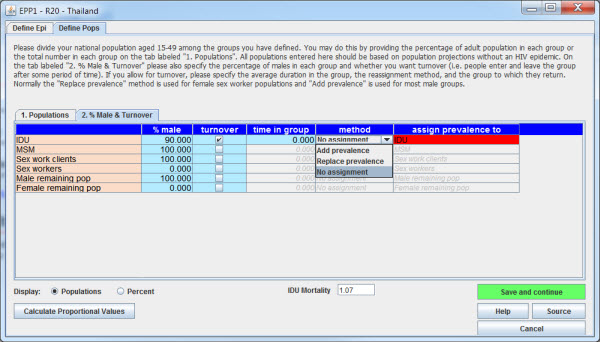
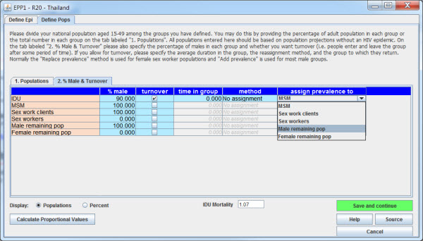
Once this feature is turned on EPP will track the number of HIV positive former members of key sub-populations at higher risk. They will have background mortality and HIV related mortality applied after they leave the group, so the HIV positive numbers among those who left the population in a given year will tend to decrease over time.
Repeat this process for every group in which you wish to have turnover. When you have entered the percent male and the turnover details for all groups, click on Save and continue. EPP1 will then exit and return you to Spectrum. From there, select Surveillance data under the Incidence menu and EPP2 will be launched to collect your surveillance and survey data.
Before you leave the Define Pops page, you should document what you have done on this page. In Case 1 with an Urban rural generalized epidemic if you have used the United Nations Population Division urban proportions provided by EPP, you don't really need to say anything. However, in all other cases you click on the Source button and document what you have done before hitting Save and continue.
In Case 1, if you did change the urban proportions, indicate the source of your revised urban values, e.g., your national population projections.
In Case 2 where you have entered populations for each region or province of the country, you should document the source of your population projections. If they came from regional or provincial projections by your National Statistical Bureau, enter this in the source comment panel. If you did it by assuming some particular changes in the proportion of population in each region, e.g., a percentage increase or decrease over time, document exactly what percentages you used for each region. This is critical if you are to come back in a few months and understand what you did. It is also invaluable for anybody else who has to understand and use your projection for other purposes.
In Case 3 where you are dealing with a concentrated epidemic or if you build your own epidemic, then you have much more information to enter here. First, size estimates for key sub-populations at higher risk are often highly uncertain. Multiple size estimates covering a wide range probably exist for each such sub-population. It is extremely important that you provide the source of the size estimates you have used here and also that you explain your rationale for choosing those sizes. Second, if you have chosen to use turnover, then you have entered the average duration that people remain in a sub-population at higher risk. This data normally has come from surveys, either from questions about the percent of the sample that entered the group in the last year or from questions on average time spent in the group. Again, it is very important that the sources of these estimates, including the specific questions used to provide the data, be entered so that others can review them and understand your logic.